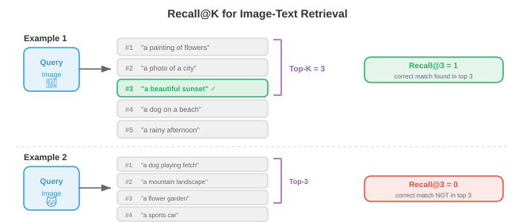

多模态表征¶
一句话总结：多模态表征通过对比学习把视觉、语言、音频投影到共享嵌入空间，CLIP 及其后继模型由此实现零样本迁移与跨模态检索。
🗺️ 本章导览¶
- 本章覆盖多模态学习：表征 → 视觉语言 → 图像视频 tokenize → 跨模态生成 → 统一架构
- 01. 多模态表征 (本节)：融合策略、对比学习、CLIP
- 02. 视觉语言模型: VLM、BLIP、LLaVA 家族
- 03. 图像与视频 Token 化: VQ-VAE、Video Tokenizer
- 04. 跨模态生成: Text-to-Image、Text-to-Video、扩散
- 05. 统一多模态架构：世界模型、Sora、Gemini 类系统
多模态表征把视觉、语言与音频桥接到共享嵌入空间。 本节涵盖融合策略、CLIP、ALIGN、SigLIP、对比损失函数 (InfoNCE、NT-Xent)、零样本分类以及检索评测.
-
想象一下，你正坐在咖啡馆里。 你看到桌上一杯冒着热气的咖啡，听到瓷器碰撞的清脆声，闻到烘焙咖啡豆的香气，手掌感受到杯身散发的温暖。 没有任何单一感官能告诉你全部信息：大脑把这些信号融合成一个统一的知觉——"一杯热咖啡". 多模态学习 (multimodal learning) 让机器做同样的事：它把来自多种模态 (视觉、语言、音频等) 的信息组合起来，得到比任何单一模态更丰富、更鲁棒的表征。
-
模态 (modality) 是一种独立的信息通道。 机器学习里最常见的模态包括图像 (像素网格)、文本 (Token 序列)、音频 (波形或频谱图，见第 9 章)、视频 (帧序列)、结构化数据 (表格、图). 每种模态都有自己的统计结构：图像在空间上连贯，文本是离散的序列，音频是连续的时间信号。 多模态学习的挑战就是要跨越这些根本不同的数据类型。
-
为什么要费劲组合多种模态？因为它们提供互补信息。 一张狗的照片能告诉你品种和毛色，但说不出它的名字。 一句话"我家的金毛叫 Max"给了你名字和品种，却看不出具体姿态。 图像加文本一起，才是完整的画面。 这种互补性正是核心动机：多模态模型能回答问题、生成内容、做出决策，这些都是单模态模型做不到的。

融合策略¶
-
把它想成一个小组作业。 你有两种合作方式：所有人一开始就挤在同一间屋里，共享草稿和笔记；或者每个人独立写完自己那部分，最后再把文档合并。 这对应多模态学习里的早期融合 (early fusion) 与晚期融合 (late fusion).
-
早期融合 (也叫特征级融合) 在任何深度处理之前，先把不同模态的原始特征或低层特征拼接、混合起来。 例如，你可以把图像的像素特征和文本的 Token 嵌入拼在一起，然后送进一个统一的 Transformer. 模型从一开始就能学习细粒度的跨模态交互，但输入空间很大，模型也必须同时应对差异极大的数据类型。
-
形式化地讲，给定两种模态的特征向量 \(x_{\text{img}} \in \mathbb{R}^{d_1}\) 与 \(x_{\text{txt}} \in \mathbb{R}^{d_2}\)，早期融合就是简单拼接:
-
拼接后的向量由一个共享网络处理。 优点是模型能在每一层都发现跨模态关联。 缺点是算力开销大，而且要对齐差异巨大的特征类型 (稠密的像素值 vs 稀疏的 Token 索引) 相当困难。
-
晚期融合 (也叫决策级融合) 让每种模态各自走一遍编码器，各自产出高层表征甚至最终预测，然后把这些输出组合起来——通常是打分平均、投票，或者一个可学习的组合层。 晚期融合更简单，也方便直接复用现成的预训练单模态模型，但它捕捉不到低层跨模态交互，因为各模态从头到尾都没"看到"过对方的原始特征。
-
给定各模态的预测 \(\hat{y}_1\) 与 \(\hat{y}_2\)，一种简单的晚期融合规则是:
-
其中 \(\alpha \in [0, 1]\) 是可学习或手工调节的混合权重。
-
中期融合 (middle fusion，也叫 intermediate fusion) 是大多数现代系统采用的务实折中方案。 每种模态先用各自的编码器抽取模态专属特征，然后在网络中段把这些编码后的表征组合起来，通常通过交叉注意力层。 这样每个编码器能专精于自己的模态，同时又能实现丰富的跨模态交互。 Flamingo、LLaVA 以及大多数视觉语言模型 (见 02 节) 用的都是中期融合。

- 融合策略的选择取决于数据量、算力预算和任务类型。 早期融合强大但吃数据。 晚期融合便宜但表达力有限。 带交叉注意力的中期融合已经成为大规模多模态模型的主流做法，因为它在表达力与模块化之间取得了平衡。
联合嵌入空间¶
-
想象一台万能翻译器，它能把任何语言的任何句子映射到同一个"语义空间"里的同一个点。 无论是英语的 "a dog on a beach"、法语版还是日语版，都会落到同一个坐标。 联合嵌入空间 (joint embedding space) 做的正是这件事，但是是跨模态的：一张"狗在沙滩上"的照片和文字 "a dog on a beach" 应该落在同一向量空间里彼此靠近的位置。
-
形式化地讲，我们学习两个编码函数：模态 1 (比如图像) 的 \(f_\theta : \mathcal{X}_1 \to \mathbb{R}^d\)，与模态 2 (比如文本) 的 \(g_\phi : \mathcal{X}_2 \to \mathbb{R}^d\). 两者都把输入映射到同一个 \(d\) 维空间。 训练目标要保证语义匹配的对 \((x_1, x_2)\) 的嵌入 \(f_\theta(x_1)\) 与 \(g_\phi(x_2)\) 靠得近 (余弦相似度高)，不匹配的对则远离。
-
这是第 7 章词嵌入空间的直接推广。 回想一下，Word2Vec 与 GloVe 把语义相近的词放到向量空间中相邻的位置。 联合嵌入空间把这一思想拓展到跨模态：我们不再只测词与词的相似度，而是测图像与文本、音频与文本，甚至图像与音频之间的相似度。
-
相似度度量几乎总是余弦相似度 (cosine similarity，见第 1 章):
- 把所有嵌入做 \(L_2\) 归一化投到单位超球面上，余弦相似度就退化成简单的点积 \(u \cdot v\)，计算极快，还能用近似最近邻库进一步加速。

- 联合嵌入空间的威力在于，它能实现零样本迁移 (zero-shot transfer). 一旦图像和文本嵌入对齐了，你就能把图像分类到从未训练过的类别：只要把类别名称当文本嵌入进去，找出哪一个文本嵌入与图像嵌入最接近就行。 无需任何任务专属的微调。 这正是 CLIP 及其后继者的关键洞见。
多模态对齐的对比学习¶
-
想象一个课堂练习：学生拿到一堆打乱的照片和描述，要求把每张照片和对应的描述配对。 要做好这件事，你既要理解视觉内容，也要理解语言，还要知道两者如何关联。 对比学习 (contrastive learning) 就是照这个思路训练模型：给定一批 (图像，文本) 对，模型要判断哪张图配哪段文本。
-
正如第 8 章第 04 节所看到的，单模态下的对比学习 (SimCLR、MoCo) 把同一图像的不同增强视图拉近，把不同图像的视图推远。 多模态对比学习把"增强视图"换成"匹配的模态"：一张图像和它的描述是正样本对；这张图像与批中其他任何描述配对就是负样本对。
CLIP¶
-
CLIP (Contrastive Language-Image Pre-training, Radford 等，2021) 是多模态对比学习的奠基模型。 它在 4 亿个从互联网爬取的 (图像，文本) 对上，联合训练一个图像编码器 (ViT 或 ResNet，见第 8 章) 与一个文本编码器 (Transformer，见第 7 章).
-
给定一批 \(N\) 个图像-文本对，CLIP 计算所有图像嵌入与所有文本嵌入之间的 \(N \times N\) 余弦相似度矩阵。 对角线上是匹配的正样本对；所有非对角线都是不匹配的负样本对。 训练损失把对角线推高，把非对角线压低。
-
损失是对称的交叉熵。 对于与文本 \(j = i\) 配对的图像 \(i\)，图像到文本方向的损失是:
- 文本到图像方向的损失把角色对调:
- 总的 CLIP 损失取两者平均:
- 这里 \(\tau\) 是可学习的温度 (temperature) 参数 (初始化为 \(\tau = 0.07\)). 温度控制 Softmax 分布的锐利程度：\(\tau\) 小，模型只死盯最相近的那个匹配；\(\tau\) 大，概率分布则更均匀。 CLIP 把 \(\tau\) 和模型权重一起学，而不是当成固定超参数。

-
CLIP 的图像编码器一般是 ViT-L/14 (一个 14x14 图块的大号视觉 Transformer，见第 8 章第 04 节). 文本编码器是 12 层带因果掩码的 Transformer (类似 GPT，见第 7 章第 04 节). 两个编码器都通过可学习的线性投影把输出映射到共享的 512 维或 768 维空间，再做 \(L_2\) 归一化。
-
CLIP 最了不起的性质是零样本图像分类 (zero-shot image classification). 要把图像分到 \(K\) 个类别中的一个，你为每个类别造一句提示词，比如 "a photo of a {class name}"，用文本编码器嵌入每一条提示词，用图像编码器嵌入图像，挑出与图像嵌入余弦相似度最高的那条文本嵌入对应的类别。 在 ImageNet 上，CLIP 没见过任何 ImageNet 训练样本，就取得了具有竞争力的准确率。
ALIGN¶
- ALIGN (Jia 等，2021) 把 CLIP 的思路扩展到更嘈杂、更大的数据集上：18 亿个几乎没做过滤的图文对。 CLIP 精心筛选数据，ALIGN 则证明：规模可以抵消噪声。 ALIGN 用 EfficientNet 图像编码器加 BERT 文本编码器，训练用的还是同样的对比损失。 关键结论是：数据量足够大时，你不需要昂贵的清洗；对比目标本身会自然给噪声样本低权重，因为它们产生不一致的梯度。
SigLIP¶
-
SigLIP (Sigmoid Loss for Language-Image Pre-training, Zhai 等，2023) 把 CLIP 基于 Softmax 的对比损失换成了更简单的 Sigmoid 损失。 CLIP 把 \(N \times N\) 相似度矩阵当成分类问题 (每一行做一次跨列的 Softmax), SigLIP 则把每个位置当成独立的二分类：这一 (图像，文本) 对匹配吗?
-
SigLIP 对单个位置 \((i, j)\) 的损失是:
-
其中 \(i = j\) 时 \(y_{ij} = 1\) (匹配)，否则 \(y_{ij} = 0\), \(\sigma\) 是 Sigmoid 函数。
-
SigLIP 的关键好处是：它不需要跨整个 batch 做全局 Softmax 归一化。 在 CLIP 里，Softmax 分母要求把所有嵌入跨所有设备汇聚，这在分布式训练里是通信瓶颈。 SigLIP 的逐位 Sigmoid 损失可以本地计算，因此更容易高效扩展到超大批。 SigLIP 在训练开销更低的情况下能追平 CLIP 的效果。
对比损失函数细节¶
- 对比学习中用到的损失函数有一个共同结构：都是想让正样本对的相似度比负样本对高一些，再用某种"边距"或"温度"的概念控制模型推得多狠。 我们来把关键变体形式化。
InfoNCE¶
- InfoNCE (Noise-Contrastive Estimation, van den Oord 等，2018) 是 CLIP 损失背后的理论基础。 给定一个查询 \(q\)、一个正样本键 \(k^+\) 与 \(K\) 个负样本键 \(\{k_1^-, \ldots, k_K^-\}\)，损失是:
- 这是一个 \((K+1)\) 路分类问题：从 \(K+1\) 个候选中找出正样本。 InfoNCE 是查询与正样本键之间互信息的一个下界，所以最大化它就能对齐语义匹配输入的表征。 负样本数 \(K\) 越大，这个下界越紧，这就解释了为什么对比方法从大批中获益。
NT-Xent¶
- NT-Xent (Normalised Temperature-scaled Cross-Entropy, Chen 等，2020) 是 SimCLR (见第 8 章第 04 节) 用的损失，本质上是把 InfoNCE 在一个 batch 内对称地应用一次。 对一批 \(N\) 对样本，它们的 \(2N\) 个增强视图为每个锚点提供 \(2N - 2\) 个负样本 (所有视图，除了自身和它的正样本). 一对正样本 \((i, j)\) 的损失是:
- NT-Xent 和 InfoNCE 是同一个数学公式；名字不同是因为它们在不同语境下被引入 (自监督视觉 vs 表征学习理论).
温度的作用¶
-
温度 \(\tau\) 是对比学习中最重要的超参数之一。 直觉上，可以把温度当作物理意义上的温度：高温下分子无序运动 (Softmax 变平，所有负样本看起来一样糟)；低温下分子凝结成刚性结构 (Softmax 变尖，只有最难的负样本重要).
-
形式化地讲，当 \(\tau \to 0\) 时，Softmax 逼近硬 argmax，只挑出一个最难的负样本。 当 \(\tau \to \infty\) 时，所有负样本贡献相同。 实践中，对归一化嵌入而言 \(\tau \in [0.01, 0.1]\) 效果不错。 温度太低会导致训练不稳定 (难负样本上的梯度爆炸)；温度太高则让损失对违规不敏感。
-
CLIP 把 \(\tau\) 初始化为 0.07，用对数参数化 \(\tau = \exp(t)\) 来学它，\(t\) 与模型权重一起靠梯度下降更新。 这样模型可以在训练中自动调整对比任务的难度。

三元组损失与基于边距的替代方案¶
- 在 InfoNCE 主导之前，三元组损失 (triplet loss) 一直是度量学习的标准。 给定锚点 \(a\)、正样本 \(p\)、负样本 \(n\):
-
其中 \(m\) 是边距，保证正样本比负样本至少近 \(m\). 三元组损失作用于单个三元组而非整个 batch，因此样本效率不如 InfoNCE. 它对负样本采样策略也很敏感：随机负样本往往太容易 (损失直接为零)，所以难负样本挖掘 (hard negative mining，挑出最近的错误匹配) 或半难挖掘 (semi-hard mining，挑出边距内的负样本) 就变得关键。
-
InfoNCE 在整个 batch 上隐式做了难负样本挖掘，这也是它在规模上胜过三元组损失的原因之一。 InfoNCE 里的 Softmax 归一化自动给难负样本 (与锚点相似度高的样本) 加权，提供了一个天然的课程表，无需显式挖掘。
图文检索与零样本分类¶
-
一旦有了训练好的联合嵌入空间，你就能做图文检索：给定一张图像查询，从数据库中找到最相关的文本 (图到文检索)；或者给定一段文本查询，找到最相关的图像 (文到图检索). 这其实就是在共享嵌入空间里做最近邻搜索。
-
想象一位图书管理员，能在百万条目的目录里瞬间比对任何照片和任何描述。 她不需要事先了解每一种可能的类别；她只是测量每张照片与每段描述有多"近". 这正是 CLIP 类模型做检索与零样本分类的方式。
-
零样本分类 (zero-shot classification) 是文到图检索的一个特例。 给定 \(K\) 个类别名称，你构造文本提示词 \(\{t_1, \ldots, t_K\}\) (例如 "a photo of a cat", "a photo of a dog") 并嵌入它们。 对于一张新图像 \(x\)，预测类别是:
-
关键洞见是：文本编码器扮演了一个灵活的分类头。 你不用为每个下游任务训练新的线性层，只需用自然语言描述任务即可。 这就是 CLIP 泛化能力那么强的原因：文本编码器在预训练中已经见过了海量多样的描述。
-
提示工程 (prompt engineering) 很重要。 仅仅把提示模板从 "{class name}" 换成 "a photo of a {class name}", CLIP 在 ImageNet 上的零样本准确率就能从 63.2% 提升到 68.4%. 更进一步，提示集成 (prompt ensembling) 把多个模板 (例如 "a photo of a {class name}"、"a good photo of a {class name}"、"a drawing of a {class name}") 的文本嵌入取平均，得到更鲁棒的文本表征。

视听对应¶
-
闭上眼，听有人拍篮球。 你能听出球落地时那有节奏的砰砰声。 现在睁开眼：视觉上的每一次落地都和一次砰声完美同步。 音频与视觉事件之间这种紧密对应，是一个天然的免费监督信号，机器可以从中学习。 视听对应学习 (audio-visual correspondence learning) 训练模型把声音与其视觉来源关联起来，完全不需要人工标注。
-
这个思路和 CLIP 惊人地相似，只是把文本换成了音频。 给定成对的视频帧与音频片段，模型学习一个嵌入空间，让时间上对齐的音视频对靠得近，错位的对相互远离。
-
视听嵌入 (Audio-Visual Embedding, AVE) 方法 (Arandjelovic 与 Zisserman, 2017) 在视频数据上用对比损失训练一个视觉编码器 \(f\) 与一个音频编码器 \(g\). 正样本对是 (视频帧，同一时刻的音频片段)，负样本是来自其他视频或其他时刻的音频片段。 模型学到狗叫声配狗的画面，吉他声配吉他的画面，全程无需标签。
-
音频编码器通常用 CNN 或音频 Transformer 处理对数梅尔频谱图 (log-mel spectrogram，见第 9 章第 01 节)，输出固定大小的嵌入。 视觉编码器用标准图像骨干 (ResNet、ViT) 处理视频帧。 两者都投影到共享的 \(d\) 维空间，训练用的仍是与 CLIP 一样的 InfoNCE 损失:

-
视听学习的应用包括：声源定位 (声音来自图像中的哪里?)、视听语音识别 (把唇动与音频结合，见第 9 章第 02 节)、视听源分离 (通过看说话人的脸来分离出他的声音，即第 9 章第 05 节的"鸡尾酒会"问题)，以及基于音频条件的视频生成。
-
ImageBind (Girdhar 等，2023) 把这一想法扩展到六种模态：图像、文本、音频、深度、热成像、惯性测量单元 (Inertial Measurement Unit, IMU) 数据。 关键洞见是：你不需要为所有模态组合都准备成对数据。 只要把每一种模态都与图像对齐 (文本用图文对、音频用图像-音频对，等等)，所有模态都会通过共享的图像嵌入空间隐式对齐。 这种通过一个公共锚点模态"绑定"的做法，会涌现出对齐效果：音频和文本从未直接一起训练，却也变得相似。
评测¶
- 评测多模态模型需要能刻画跨模态理解的指标。 两大主流评测范式是零样本基准与检索指标.
零样本基准¶
-
零样本评测检验模型能否完成从未显式训练过的任务。 最常见的基准是 ImageNet 零样本准确率：把全部 1000 个 ImageNet 类别名嵌入为文本，把每张测试图像嵌入，基于余弦相似度测 top-1 与 top-5 分类准确率。 CLIP ViT-L/14 零样本达到 75.5% top-1 准确率，与在 ImageNet 上有监督训练的 ResNet-50 相当。
-
其他零样本基准包括：CIFAR-10/100、STL-10、Food-101、Oxford Pets、Flowers-102. 跨多个数据集评测能检验模型是真的具备通用视觉理解能力，还是只是记住了预训练数据里的某些模式。
-
线性探针 (linear probe) 评测是一种互补测试。 你冻结预训练图像编码器，对一个带标注数据集抽取特征，在上面训一个简单线性分类器。 这独立于零样本检索机制，单独测学到的表征质量。 CLIP 的特征是极好的线性探针特征，常与有监督预训练相当甚至更好。
检索指标¶
-
检索任务 (图到文与文到图) 的标准指标是 Recall@K (R@K)：在前 \(K\) 个检索结果里出现正确匹配的查询比例。 常用值是 R@1、R@5、R@10.
-
形式化地讲，对一组 \(Q\) 个查询:
-
其中 \(\text{rank}(q)\) 是查询 \(q\) 的检索排序列表中正确匹配的位置。
-
标准检索基准包括 Flickr30K (31000 张图像，每张 5 条描述) 与 MS-COCO (123000 张图像，每张 5 条描述). 评测在测试集上进行：给定一张图，从整个测试集中检索正确的描述，反之亦然。
-
中位排名 (Median rank, MedR) 是补充指标：所有查询中正确匹配位置的中位数。 完美模型 MedR = 1，越低越好。
-
除了检索，多模态模型还在组合理解基准上评测，比如 Winoground (测试模型能不能区分 "a mug in a dog" 与 "a dog in a mug") 以及 ARO (Attribute, Relation, Order，属性/关系/顺序)，后者测模型是真理解语言结构还是只在做词袋匹配。 CLIP 类模型在这些基准上经常吃瘪，揭示了一个根本局限：对比预训练对齐的是全局语义，未必能捕捉细粒度的组合结构。

收尾串联¶
-
本节介绍的多模态表征是本章后续内容的基石。 CLIP 及其后继模型训练出的联合嵌入空间是连接视觉与语言的"胶水". 02 节在这块基石上进一步引入视觉语言模型，从检索走向对图像生成文本。 03 节探讨如何把图像和视频 Token 化，供序列模型使用。 04 节覆盖跨模态生成 (文到图、文到视频). 05 节考察在同一个模型中处理多种模态的统一架构。
-
核心要点：在配对数据上做对比学习，就能得到不同模态可互换的嵌入空间。 一个图像嵌入和一个文本嵌入变成了"同一类东西"，由此实现零样本分类、检索，以及无缝集成到更大系统中。 这个想法简单到不像话——把匹配对拉近，把不匹配对推远——但它异乎寻常地有效。
编程练习 (在 CoLab 或 notebook 中完成)¶
-
从零实现 CLIP 对比损失。 创建随机图像和文本嵌入，计算相似度矩阵，并计算对称交叉熵损失。
import jax import jax.numpy as jnp import matplotlib.pyplot as plt def clip_loss(image_embeds, text_embeds, temperature=0.07): """计算对称的 CLIP 对比损失.""" # L2 归一化嵌入 image_embeds = image_embeds / jnp.linalg.norm(image_embeds, axis=1, keepdims=True) text_embeds = text_embeds / jnp.linalg.norm(text_embeds, axis=1, keepdims=True) # 计算余弦相似度矩阵 (N x N) logits = image_embeds @ text_embeds.T / temperature # (N, N) # 标签: 对角线 (第 i 张图配第 i 段文) N = logits.shape[0] labels = jnp.arange(N) # 对称交叉熵: 图到文 + 文到图 loss_i2t = -jnp.mean(jax.nn.log_softmax(logits, axis=1)[jnp.arange(N), labels]) loss_t2i = -jnp.mean(jax.nn.log_softmax(logits, axis=0)[labels, jnp.arange(N)]) return (loss_i2t + loss_t2i) / 2, logits * temperature # 模拟 64 维空间中 8 个图文对的一个 batch key = jax.random.PRNGKey(42) k1, k2 = jax.random.split(key) N, D = 8, 64 image_embeds = jax.random.normal(k1, (N, D)) text_embeds = jax.random.normal(k2, (N, D)) loss, sim_matrix = clip_loss(image_embeds, text_embeds) print(f"CLIP loss (random embeddings): {loss:.4f}") # 可视化相似度矩阵 fig, ax = plt.subplots(figsize=(6, 5)) im = ax.imshow(sim_matrix, cmap='coolwarm', vmin=-1, vmax=1) ax.set_xlabel("Text index"); ax.set_ylabel("Image index") ax.set_title(f"Cosine Similarity Matrix (loss={loss:.3f})") plt.colorbar(im); plt.tight_layout(); plt.show() # 试试改温度 (0.01, 0.1, 1.0), 看损失怎么变化 # 试试让匹配对相似: 令 text_embeds = image_embeds + 小噪声 -
搭一个玩具版联合嵌入模型，用 InfoNCE 损失与梯度下降对齐 2D "图像" (随机向量) 与 "描述" (不同的随机向量).
import jax import jax.numpy as jnp import matplotlib.pyplot as plt def info_nce_loss(img_enc, txt_enc, img_data, txt_data, tau=0.1): """在一批配对 (image, text) 数据上计算 InfoNCE.""" z_img = img_data @ img_enc # (N, D) z_txt = txt_data @ txt_enc # (N, D) # L2 归一化 z_img = z_img / jnp.linalg.norm(z_img, axis=1, keepdims=True) z_txt = z_txt / jnp.linalg.norm(z_txt, axis=1, keepdims=True) logits = z_img @ z_txt.T / tau labels = jnp.arange(logits.shape[0]) return -jnp.mean(jax.nn.log_softmax(logits, axis=1)[jnp.arange(len(labels)), labels]) # 生成 32 组配对样本: img 在 R^8, txt 在 R^6, 嵌入到 R^4 key = jax.random.PRNGKey(0) k1, k2, k3, k4 = jax.random.split(key, 4) N, d_img, d_txt, d_embed = 32, 8, 6, 4 img_data = jax.random.normal(k1, (N, d_img)) txt_data = jax.random.normal(k2, (N, d_txt)) # 可学习的投影矩阵 img_enc = jax.random.normal(k3, (d_img, d_embed)) * 0.1 txt_enc = jax.random.normal(k4, (d_txt, d_embed)) * 0.1 grad_fn = jax.jit(jax.grad(info_nce_loss, argnums=(0, 1))) lr = 0.05 losses = [] for step in range(300): loss = info_nce_loss(img_enc, txt_enc, img_data, txt_data) losses.append(float(loss)) g_img, g_txt = grad_fn(img_enc, txt_enc, img_data, txt_data) img_enc = img_enc - lr * g_img txt_enc = txt_enc - lr * g_txt print(f"Initial loss: {losses[0]:.3f}, Final loss: {losses[-1]:.3f}") print(f"Random baseline (log N): {jnp.log(N):.3f}") plt.figure(figsize=(8, 4)) plt.plot(losses, color='#2c3e50') plt.axhline(y=0, color='green', linestyle='--', alpha=0.5, label='Perfect alignment') plt.axhline(y=float(jnp.log(N)), color='red', linestyle='--', alpha=0.5, label='Random (log N)') plt.xlabel("Step"); plt.ylabel("InfoNCE Loss") plt.title("Learning a Joint Embedding Space") plt.legend(); plt.grid(alpha=0.3); plt.tight_layout(); plt.show() # 改一下 d_embed (试 2, 4, 16), 看嵌入维度对对齐的影响 -
用预先算好的嵌入实现零样本分类。 把类"原型"模拟成文本嵌入，用最近邻查找对新图像分类。
import jax import jax.numpy as jnp import matplotlib.pyplot as plt # 模拟 5 个类, 每个类在 R^32 里有一个原型文本嵌入 key = jax.random.PRNGKey(42) n_classes, d = 5, 32 class_names = ["cat", "dog", "car", "plane", "ship"] # 类原型 (想象它们来自文本编码器) k1, k2 = jax.random.split(key) class_prototypes = jax.random.normal(k1, (n_classes, d)) class_prototypes = class_prototypes / jnp.linalg.norm(class_prototypes, axis=1, keepdims=True) # 生成 200 张测试"图像" (嵌入 = 类原型 + 噪声) n_per_class = 40 true_labels = jnp.repeat(jnp.arange(n_classes), n_per_class) keys = jax.random.split(k2, n_classes * n_per_class) image_embeds = [] for i in range(n_classes): noise = jax.random.normal(keys[i], (n_per_class, d)) * 0.5 cluster = class_prototypes[i] + noise image_embeds.append(cluster) image_embeds = jnp.concatenate(image_embeds, axis=0) image_embeds = image_embeds / jnp.linalg.norm(image_embeds, axis=1, keepdims=True) # 零样本分类: 与各原型算余弦相似度 similarities = image_embeds @ class_prototypes.T # (200, 5) predicted_labels = jnp.argmax(similarities, axis=1) accuracy = jnp.mean(predicted_labels == true_labels) print(f"Zero-shot accuracy: {accuracy:.1%}") # 混淆矩阵 conf = jnp.zeros((n_classes, n_classes), dtype=jnp.int32) for true, pred in zip(true_labels, predicted_labels): conf = conf.at[true, pred].add(1) fig, ax = plt.subplots(figsize=(6, 5)) im = ax.imshow(conf, cmap='Blues') ax.set_xticks(range(n_classes)); ax.set_xticklabels(class_names, rotation=45) ax.set_yticks(range(n_classes)); ax.set_yticklabels(class_names) ax.set_xlabel("Predicted"); ax.set_ylabel("True") for i in range(n_classes): for j in range(n_classes): ax.text(j, i, int(conf[i, j]), ha='center', va='center', fontsize=11) ax.set_title(f"Zero-Shot Confusion Matrix (acc={accuracy:.1%})") plt.colorbar(im); plt.tight_layout(); plt.show() # 试着加大噪声 (0.5 -> 1.0 -> 2.0), 看准确率如何下降 # 试着做提示集成: 对每个原型平均 3 个带噪副本
📌 本节要点¶
- 模态与多模态学习：模态是独立的信息通道 (图像、文本、音频等)，多模态学习融合多通道以获得更丰富的表征。
- 三种融合策略：早期融合拼原始特征，晚期融合合并各自预测，中期融合借交叉注意力在中间层交互，是现代主流做法。
- 联合嵌入空间：图像与文本编码器把输入映射到同一 \(d\) 维空间，匹配对靠近，不匹配对远离，相似度用余弦度量。
- CLIP 对比损失：对 \(N \times N\) 相似度矩阵做对称交叉熵，温度 \(\tau\) 与模型权重一起学，训练目标推高对角线压低非对角线。
- ALIGN 与 SigLIP: ALIGN 用海量嘈杂数据证明规模能替代清洗；SigLIP 用逐位 Sigmoid 换掉全局 Softmax，更省通信、更易扩展。
- InfoNCE 与温度: InfoNCE 是互信息下界，大批负样本让下界更紧；温度 \(\tau\) 控制 Softmax 锐度，太低易崩太高不敏感。
- 零样本迁移：把类别名当文本嵌入，与图像嵌入比余弦相似度即可，无需任务微调；提示工程与提示集成显著提升准确率。
- 视听对应与 ImageBind：音视频对齐把 CLIP 思路推广到时间同步的音画对，ImageBind 用图像作锚点绑定六种模态。
- 评测两条路：零样本准确率 + 线性探针 测表征质量；Recall@K 与 MedR 测检索；Winoground/ARO 揭示组合理解的短板。